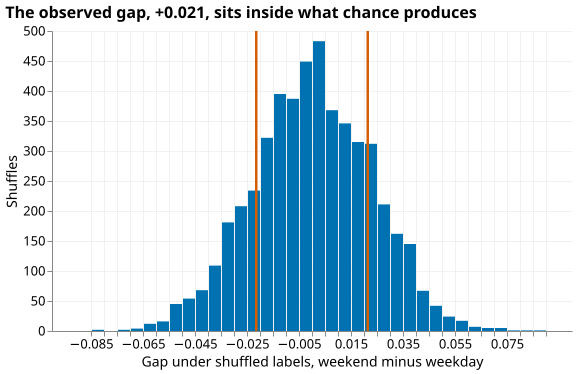
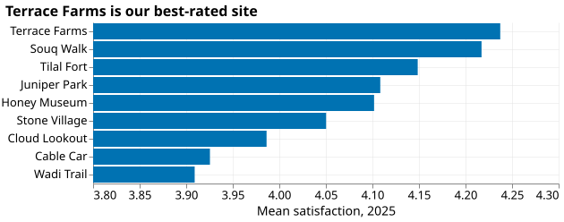
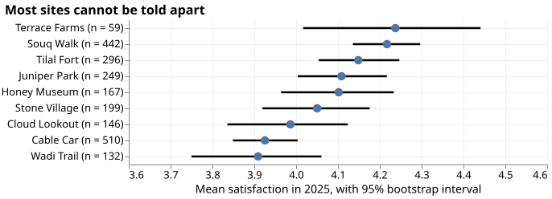
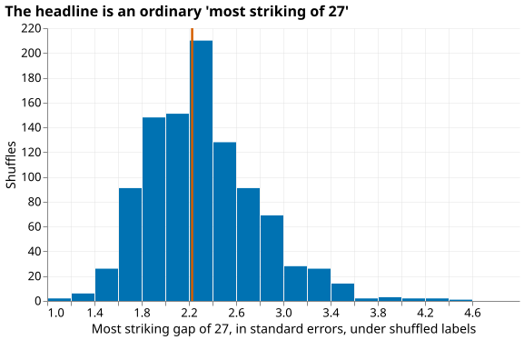

SDAIA Academy · Exploratory Analysis and Visualisation
Check and report
Day 4: Which patterns survive a chance check, how to draw what is not known, and a report that anyone can run again
Data Science Track4 teaching days + capstone day4 sessions · 4 labsDS-203
Today
Check and report
Session 1 · Could it be chanceApplying the resampling of DS-201 to patterns found by exploring: which rule for which pattern, and what to do with the result
Session 2 · Showing uncertaintyDrawing uncertainty: interval marks, what a bar hides, and captions that say what the interval is
Session 3 · The traps of exploringWhy the best of many comparisons looks real, how to count the comparisons made, and what turns an exploratory finding into a confirmed one
Session 4 · A report that rerunsWhat makes a report rerun: raw data read-only, one path from raw data to the page, fixed seeds, and findings written with their limits
Review · Day 3
Where may this axis start?
A service desk's monthly response time moved between 41 and 46 minutes over two years. The changes must be visible. Which chart is honest?
Bars, with the y axis from 40 to 47 minutes
Bars, with the y axis from 0 to 50 minutes
A line with points, y axis from 40 to 47, range stated in the title
A filled area, with the y axis from 40 to 47 minutes
Why. A point or a line is read by its position, so its axis may start where the data starts if the chart says so. Bars and areas are read from their base.
Session 1
Could it be chance
Choose shuffling for a gap between groups and resampling for an interval
Resample the unit that was sampled, here the week
Decide to report, qualify or drop a pattern and give the reason
01
What the board wants to announce
Three patterns, and three decisions open for each
The weekend
"Weekend visitors are more satisfied than weekday visitors."
Sites and hotels
"When the sites are busy, the hotels fill."
The Honey Museum
"At the Honey Museum, weekend visitors were far more satisfied in 2025."
Decision
Meaning
Report
the pattern stands and matters
Qualify
it stands, with a stated limit
Drop
the data does not support announcing it
From DS-201, in one slide
Shuffle to test a difference; resample to put an interval on an estimate
Permutation test
Bootstrap
Question
could this gap arise if the label meant nothing?
how far could this estimate move with another sample?
Procedure
shuffle the labels, recompute the gap
draw the units again with replacement, recompute
Result
a p-value
an interval
Here
the weekend gap
the weekly correlation
New today. Not the procedures: choosing between them, choosing the unit to resample, and deciding what to do with the result.
Lab 4.1, steps 1 to 3
Shuffled labels give this gap one time in three

Gaps under shuffled labels; the lines mark the observed gap.
Weekend 4.13, weekday 4.11: a gap of +0.02.
p-value about 0.35.
Decision: drop the claim.
The sentence that goes in the report
"Drop" means "this data cannot tell", not "there is no difference"
Not supported
"The day of the week makes no difference to satisfaction."
Supported
"The survey shows no clear difference between weekend and weekday visitors (gap 0.02 point, p about 0.35)."
A p-value of 0.35 is the absence of evidence for a difference. It is not evidence of absence.
To claim "no difference worth acting on", give the interval of the gap and say what size would matter.
Lab 4.1, steps 4 and 5
Resample the unit that was sampled: here, the week
43,840 hotel-days
Forty hotels share one day's weather and one day's ticket total. Days in a week resemble each other. Resampling them as if independent gives an interval far too narrow.
156 weeks
One row per week for the whole region. Draw 156 weeks with replacement, recompute the correlation, repeat 5,000 times.
k = gen.integers(0, len(x), len(x)) # 156 weeks, drawn with replacement
r[i] = np.corrcoef(x[k], y[k])[0, 1]
What goes wrong. Counting rows as evidence. The number that matters is how many independent units there are.
Lab 4.1, steps 5 and 6
The correlation is not chance, and still needs a qualifier
0.70
weekly tickets and hotel occupancy
0.60 to 0.78
95% bootstrap interval, 156 weeks
0.44
with each calendar month's mean removed
The interval stays far from zero: weeks with busy sites do have fuller hotels.
Part of the 0.70 is the shared season. What remains is smaller and still positive.
Decision: qualify. The check answers "is it chance", never "is it cause".
Before deciding
A chance check answers one question out of four
Question
Answered by
Session
Could it be chance?
a permutation test or a bootstrap interval
this one
Is it large enough to matter?
the size of the effect, in the units of the decision
this one
Was it found by searching?
counting the comparisons that were made
4.3
Is it the mix, the season or the measure?
the checks of Day 2
2.2 to 2.4
The decision carries its reason. "Drop: p about 0.35 and a gap of 0.02." "Qualify: interval 0.60 to 0.78; season raises both."
Checkpoint
Which procedure, on which unit?
A school network has test scores of 4,000 pupils in 40 schools. Twenty schools used a new timetable. The analyst wants an interval for the difference in mean score between the two groups of schools. What should be resampled?
The 4,000 pupils, drawn again with replacement
The timetable labels of the pupils, shuffled
The 4,000 scores, drawn within each school
The 40 schools, drawn again with replacement
Why. The timetable was applied to schools, so the school is the unit: 40 independent units, not 4,000.
Lab 4.1 · 25 min
Chance checks on two patterns
Permutation-test the claimed weekend effect on satisfaction and bootstrap the correlation between weekly ticket sales and hotel occupancy; decide for each whether to report, qualify or drop it.
The correlation of weekly tickets and occupancy 3 min
Bootstrap the weeks: an interval 7 min
Decide, and write the reading 3 min
✱ Stretch: Remove the season from both series and bootstrap again
Session 2
Showing uncertainty
Add an interval to every estimate on a chart
Read overlapping and separate intervals without overclaiming
Write a caption that names the interval, the sample size and the limit
02
The earlier report
"Terrace Farms is our best-rated site"

As published: mean satisfaction in 2025.
Each bar is one number drawn as if it were exact.
The bars rest on 59 to 510 responses. The chart does not say which.
And yesterday's fault 1: bars on an axis from 3.8.
Lab 4.2, steps 1 and 2
Every estimate on a chart gets an interval
Site
Responses
Mean
95% interval
Terrace Farms
59
4.24
4.02 to 4.44
Souq Walk
442
4.22
4.13 to 4.30
Honey Museum
167
4.10
3.97 to 4.24
Cable Car
510
3.93
3.84 to 4.00
Wadi Trail
132
3.91
3.76 to 4.05
The fewer the responses, the wider the interval: roughly with one over the square root of n.
The site at the top has the widest interval of all.
Lab 4.2, step 3
A point, a line for the interval, and n beside the name

Mean satisfaction in 2025 with 95% bootstrap intervals.
A point is read by position, so the axis may run from 3.6 to 4.6.
Seven of the other eight intervals overlap that of Terrace Farms.
Lab 4.2, step 4
Overlap does not prove equality: compute the interval of the difference
Two intervals that do not overlap: the groups differ.
Two intervals that overlap: this sample cannot order them. They may still differ.
For a claim about two groups, resample both and take the difference each time.
Guided against unguided visits, 2025
Difference in mean satisfaction: +0.39 point, interval +0.31 to +0.47, from 680 guided and 1,520 unguided responses. The whole interval is far above zero: report.
What goes wrong. Reading "overlapping" as "the same" and announcing that all sites perform equally.
Which mark for which chart
Uncertainty has its own marks
Point and interval
For a few estimates by group. The default of this course.
Band around a line
For an estimate over time: a shaded band from the lower to the upper end at each date.
The data itself
With small groups, draw every value as a faint point behind the estimate. Twelve points say "twelve" better than any interval.
Avoid a bar with a whisker on top: the bar still says "this much from zero", and readers judge by the bar. And never draw an interval without saying what it is.
Lab 4.2, step 5
The caption names the interval, the sample and the limit
As publishedTerrace Farms is our best-rated site.
RewrittenMean satisfaction in 2025 by site with 95% bootstrap intervals. The Souq Walk (4.22, n = 442) rates above the Cable Car (3.93, n = 510); Terrace Farms' 4.24 rests on 59 responses and cannot be ranked first. The intervals show how far each mean could move with another sample of respondents; they do not correct for who chose to answer or for the mix of visitors at each site.
An interval covers sampling variation only.
Who answers a survey, how the question is put and the mix of visitors are outside it.
Checkpoint
What may the report say?
Two call centres have mean satisfaction 4.3 (interval 4.1 to 4.5, n = 80) and 4.1 (interval 4.0 to 4.2, n = 600). The intervals overlap. Which statement is supported?
The two centres deliver the same level of satisfaction
This sample cannot rank them; the difference needs its own interval
The first centre is better, since its mean is higher
The second centre is better, since its interval is narrower
Why. Overlapping intervals leave the order open. A claim about two groups rests on the interval of their difference.
Lab 4.2 · 25 min
Intervals on the satisfaction chart
Add intervals to the satisfaction bar chart of the earlier report, find which sites can be told apart and rewrite its caption.
A p-value of 0.05 means: one time in twenty, nothing looks like something.
Look twenty-seven times and it is three chances in four.
135 is what the search becomes if it also splits by origin market.
Lab 4.3, step 4
Check the method that was used, search included

The most striking of 27 gaps when the labels mean nothing.
Shuffle the weekend labels inside every site and year; keep the most striking of the 27 gaps; repeat.
Its median is 2.3 standard errors. The headline's is 2.2.
A gap as striking as the headline turns up in about half of the shuffles.
Beyond 27
Every choice made after looking is a comparison
Which groups: weekend, or Friday alone, or school holidays?
Which measure: the mean, or the share of 5s?
Which rows: all responses, or "excluding" a bad month?
Which period: 2025, or the last six months?
In the board's past report
"Visitors who arrive on a Tuesday spend the most": spend tabulated by every day of the week, every origin and every purpose, and the largest cell reported.
No bad faith is needed. An honest analyst who looks until something stands out has run many tests and remembers one.
Lab 4.3, step 5
What makes a finding confirmed is the order of events
Confirmed
The question was written down before the data that answers it was looked at.
"Guided visits are rated higher": noticed in the 2023 survey, written down, then tested once on the 2024 survey.
Exploratory
The data suggested the question.
"Hotels in the Ridge zone fill up before the Honey Festival": seen in a chart of 2024 while looking for something else.
Exploratory is a label, not an insult: it is where questions come from.
The same data cannot both suggest a pattern and confirm it.
Lab 4.3, step 6
An exploratory finding is reported with its count and its next test
1 · Label"Exploratory", in the sentence itself
→
2 · Counthow many comparisons it was chosen from
→
3 · Write downthe question, before new data exists
→
4 · Test onceon data that did not suggest it
In the report. "Exploratory: among 27 comparisons, the most striking gap was 0.30 point at the Honey Museum in 2025; shuffled labels produce one as striking about half the time. The question will be tested once on the 2026 survey."
Checkpoint
What is this finding worth?
An analyst compares churn between customers who did and did not use each of 40 app features. One feature shows a difference with p = 0.02. The team wants to announce "Feature X reduces churn". What should the analyst say?
It is exploratory: expected among 40 looks; test it once on new customers
It is confirmed, because the p-value is well below 0.05
It will be confirmed once the test is rerun with more shuffles
It should be discarded and left out of the report entirely
Why. With 40 comparisons, at least one p-value below 0.05 has an 87% chance when nothing is there. The data that suggested the pattern cannot confirm it.
Lab 4.3 · 25 min
Count the comparisons
Count the comparisons behind a headline pattern, simulate the most striking of 27 chance gaps, mark five past findings exploratory or confirmed and rewrite the finding.
The headline gap and its p-value, taken alone 4 min
All 27 site-year gaps 5 min
The chance of at least one small p-value among 27 2 min
Simulate the most striking of 27 gaps under no effect 6 min
Mark five past findings exploratory or confirmed 5 min
Rewrite the finding 3 min
✱ Stretch: Count again with origin added to site and year
Session 4
A report that reruns
Render a report from raw data with one command and prove that two runs agree
Find what makes a report change between runs
Write findings with their check, their limit and an open question
04
The promise
A report that reruns has one path from the raw data to the page
Raw dataread-only, never edited by hand
→
One sourcetext and code together, parameters at the top
→
One commandruns everything in a fresh process
→
The pageevery number computed by that run
No number is typed; no chart is pasted.
A correction to the data reaches every figure at the next render.
Somebody else can run it and get the same page.
Lab 4.4, steps 1 and 2
Render twice and compare: the first test of any report
first render : out/draft_a.html, digest 27942ef6cebc
second render: out/draft_b.html, digest 319a4f665407
correlation_high: 0.783 then 0.78
correlation_low: 0.602 then 0.6
Nothing was changed between the two runs. The bootstrap drew different resamples.
A fixed seed, passed as a parameter, makes two runs agree.
A third decimal is enough for two people to hold two versions of "the" report.
Lab 4.4, step 3
A cached number is a number with no code behind it
In the report
From the cache
From the raw data
Stays
40,600
40,000
Stays from the Gulf
5,553
6,063
Mean length of stay, nights
11.27
3.30
The summary was saved once, before lab 1.2 found the duplicate rows, the 999 nights and the three spellings of "Gulf".
It was right on the day it was saved. Later decisions about the data never reached it.
Lab 4.4, step 4
Every finding carries its status, its check and its limit
Finding
Status
Check
Limit
Weeks with more ticket sales are weeks with fuller hotels (0.70)
exploratory
bootstrap of 156 weeks: 0.60 to 0.78
season raises both; no causal claim
Guided visits were rated 0.4 point higher in 2025
confirmed
question written before the 2024 survey was opened
visitors choose a guided visit
Weekend gap at the Honey Museum (0.30)
exploratory
most striking of 27; as striking in half of shuffles
to be tested on the 2026 survey
The table is the report's spine. A reader with two minutes reads it and nothing else, so no finding may sit in it without a limit.
The reader is not an analyst
An exploratory report says what was seen, how sure, and what is still open
Findings first, each one sentence with its number, in the reader's words.
One chart per finding, titled with the finding, drawn with its uncertainty.
Open questions: what the data suggested and has not tested.
Limits: what the data cannot show, and who is missing from it.
Words to keep out
"Proves", "causes", "significant" with no number, "the data says". An exploratory report writes "we saw", "in this data", "to be tested".
Capstone day
An exploratory report on a dataset you have not seen
Ruwaq Museums Network
One row per visit: museum, visitor type, minutes inside, exit rating. For the head of programmes.
Awan Parks Department
One row per maintenance request: park, category, days to close, resident rating. For the head of operations.
Miqdam Driving Schools
One row per driving test: branch, attempt, waiting days, result. For the director of training.
Submit a public repository: a notebook that reruns with a fixed seed, the rendered report, a README with the findings table.
Defend it live in 8 minutes, and redraw one chart with a different encoding when asked.
Checkpoint
Will this report rerun?
A colleague sends a notebook and a PDF report. In the notebook, one cell loads cleaned_final_v3.csv from their desktop, and the bootstrap has no seed. Which request comes first?
Set a seed, so that the intervals stop changing
Send the cleaned file along with the notebook
List the library versions that were used
Start from the raw data, with the cleaning steps as code
Why. One path from raw data to page comes first: a hand-made intermediate file is a cache with no code behind it. Then the seed, then the versions.
Lab 4.4 · 25 min
A report that reruns
Render a notebook to a report from raw data, find why two runs disagree and why the cached numbers are stale, then choose the capstone dataset.